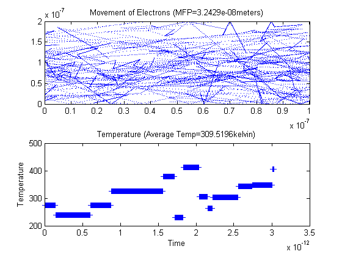
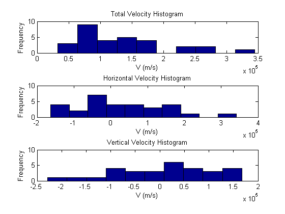

Assignment#1-Part 2:Collisions with Mean Free Path (MFP)
%Jason Gazo (100975245) Date: Feb/04/2018 % % *%%Introduction* %The purpose of this part of the experiment is to observe the movement of %electrons moving inside an N-type Silicon semiconductor crystal. The %effective mass of the electrons is given by multiplying its rest mass %(9.109x10^-31kg)by a coefficient. Once the rest mass is found %(2.36634e-31)kg, the thermal velocity can be solved. The thermal %velocity will be solved for a temperature of 300 kelvin. This thermal velocity %is approximately 1.3 e+5 m/s. If we assume electrons collide every %0.2ps, the estimated mean free path for each electron is 2.3e-10 %meters. This script will simply showcase the movement of electrons in a %frame of 200nm x 100nm. The electrons will reflect off the top and bottom %edge of the frame with a reflection angle equal to its incident angle. %When an electron passes through either side edge (left or right) it will %be translated to the opposite edge and its velocity (trajectory included) %will be maintained. The more particles used in this Monte Carlo %simulation will increase the precision of the outputted arguments in this %section. %This simulation will contain scattering events. The scattering event is %described by an exponential scattering distribution. Therefore there is a %probability that the particles will scatter during each iteration of the %movie. The larger the time step (dt), the larger the probability that a %scattering event will occur. %The instantaneous average temperature will not be eqaul to 300k since the %velocities were randomly assigned using a Maxwell-Boltzmann distribution. %This distribution was achieved by assigning each coordinate velocity a %a value from a normal distribution with a standard deviation of the %thermal velocity. Each coordinate velocity has to be divided by square %root of two so that its combined velocity (Vrms) is near the thermal velocity. %The more particles used in the cycle, the closer the mean Vrms will be to %the thermal velocity. Therefore the more particles used, the closer the %temperature will be to 300k, and the closer the measured mean free path %will be to the expected mean free path. %The running average temperature will approach 300k as more iterations are %performed.
Code:
clc
%effective mass of electrons =mn
%rest mass mo in kg
mo=9.109*10^-31;
m=0.26*mo;
%Botlzmann constant
k=1.38064*10^-23;
%Nominal size of region is 200nmx100nm
vt=@(t) sqrt(k*t/m);
vth= vt(300);
fprintf('The expected thermal velocity is %6.4f m/s \n',vt(300))
fprintf('The expected mean time between collisions is 0.200e-12 seconds\n')
%mean time collisions is 0.2 ps
tmn=0.2*10^-12;
%mean free path
mnfreepath=tmn*vt(300);
fprintf('The expected mean free path is %6.4f e-08 meters\n',mnfreepath*10^8)
fprintf('-----------------------------------------------------------\n')
%Set frame size
w=200*10^-9;
l=100*10^-9;
%set time step
deltaT=7.562*10^-15;
%Number of particles
num=30;
%Randomly initialize each particle's coordinates in the frame.
vertarray=rand(num,1)*w;
horarray=rand(num,1)*l;
%Question 1: Randomize their velocities from Maxwell-Botzmann distribution
%The histograms are plotted after the movie is completed
vx=randn(num,1).*vth/sqrt(2);
vy=randn(num,1).*vth/sqrt(2);
vrms=sqrt(vx.^2+vy.^2);
count=0;
total=0;
numberofCol=0;
check=0;
sumtemp=0;
totalvel=mean(vrms);
%%Start the Movie and it runs for 400 iterations
for i=1:400
%Horizontal Boundary conditions
horarray(horarray>=l)=horarray(horarray>=l) - l;
horarray(horarray<=0)=horarray(horarray<=0)+l;
%Vertical boundary conditions
IT=(vertarray>=w);
vy(IT)=-vy(IT);
IT=(vertarray<=0);
vy(IT)=-vy(IT);
%Update particle's coordinates with its respective velocities
horarray=horarray+vx.*deltaT;
vertarray=vertarray+vy.*deltaT;
%Question 2: Model the scattering of the electrons:
pscat=1-exp(-deltaT/(0.2*10^-12));
a=rand();
%Scattering event occurs:
if (a<pscat)
check=1;
%Question 4: Measure the mean time, and solve for mean free path:
numberofCol=numberofCol+1;
diff=i-count;
count=i;
timebtwCol=diff*deltaT;
total=total+timebtwCol; % Total = Current time - time of first scatter
avgTime=total/numberofCol; %Average 'mean time'
ave=mean(vrms); %Current Average velocity of particles
totalvel=totalvel+ave;
averageMFP=avgTime*(totalvel/numberofCol); %Running Mean Free Path
%Particle's assigned new velocity from Maxwell-Boltzmann
%distribution
vx=randn(num,1).*vth/sqrt(2);
vy=randn(num,1).*vth/sqrt(2);
vrms=sqrt(vx.^2+vy.^2);
end
% scattering event has finished
%Question 3:Solving for temperature, is it constant or dynamic?
Temp=m*mean(vrms.^2)/k;
sumtemp=sumtemp+Temp;
avgtemp=sumtemp/i;
%Plot the Temperature vs time (title contains running average
%temperature)
subplot(2,1,2)
plot(i*deltaT,Temp,'+')
title(['Temperature (Average Temp=' num2str(avgtemp),'kelvin)']);
ylabel('Temperature')
xlabel('Time')
hold on
%Plot the movement of the particles. If scattering event has occured,
%the title should then display the running average of mean free path.
subplot(2,1,1)
plot(horarray,vertarray,'.','MarkerSize', 0.1)
if(check==1)
title(['Movement of Electrons (MFP=' num2str(averageMFP),'meters)']);
else
title('Movement of Electrons')
end
xlim([0 l])
ylim([0 w])
hold on
pause(.01)
end
%Movie has ended
%Plot histograms for the particles velocities.
figure(3)
subplot(3,1,1)
hist(vrms,10)
title('Total Velocity Histogram')
xlabel('V (m/s)')
ylabel('Frequency')
subplot(3,1,2)
hist(vx,10)
title('Horizontal Velocity Histogram')
xlabel('V (m/s)')
ylabel('Frequency')
subplot(3,1,3)
hist(vy,10)
title('Vertical Velocity Histogram')
xlabel('V (m/s)')
ylabel('Frequency')
fprintf('The estimated temperature is %6.4f kelvin \n',avgtemp)
fprintf('The estimated mean free path is %6.4f e-08 meter \n',averageMFP*10^8)
fprintf('The estimated mean time between collisions is %6.4f e-12 seconds \n',avgTime*10^12)
The expected thermal velocity is 132244.8682 m/s The expected mean time between collisions is 0.200e-12 seconds The expected mean free path is 2.6449 e-08 meters ----------------------------------------------------------- The estimated temperature is 309.5196 kelvin The estimated mean free path is 3.2429 e-08 meter The estimated mean time between collisions is 0.2508 e-12 seconds 
%%Summary:
%The movie continues to work,and the boundaries of the frame behave. Each %particle moves with a different velocity. However, by looking at the %total velocity histogram it is clear that the velocities are %centered about the thermal velocity. Each x- and y- coordinate velocity %follows a normal distribution centered around a velocity of zero. Since %each particle was randomly assigned a velocity, the instantaneous average %temperature wasnt equal to 300k. Plus the particles undergo scattering %events where their velocities are reassigned randomly, thus the %instantanous velocities will fluctuate over time, approximatly about 300k. %However the running average temperture of the particles will approach 300k %if the movie is run for many more iterations (say 10000) and a lot more %particles are used (say 10,000). Therefore, even though the instantaneous %average temperature isnt exactly 300k, the running average should converge %towards it. The estimated mean free path and estimated mean time were %similar to the expected mean free path and expected mean time. Overall this %simulation was a success.